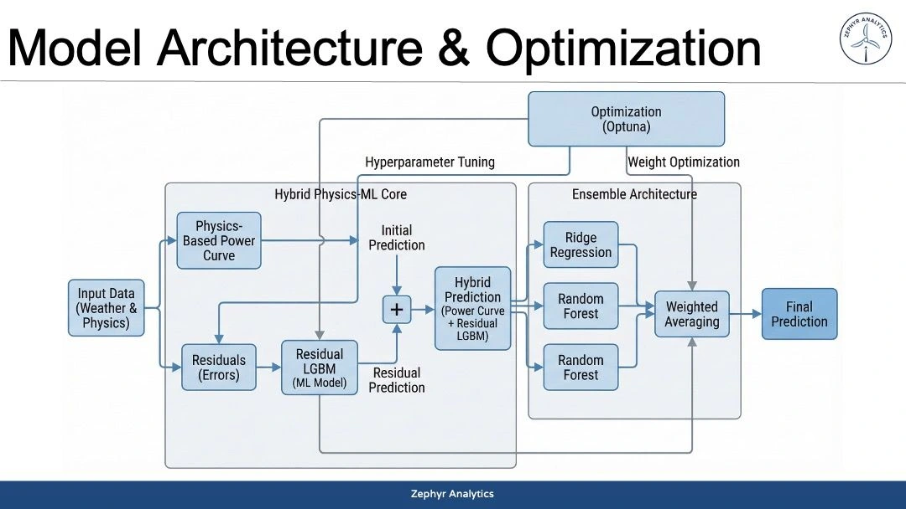
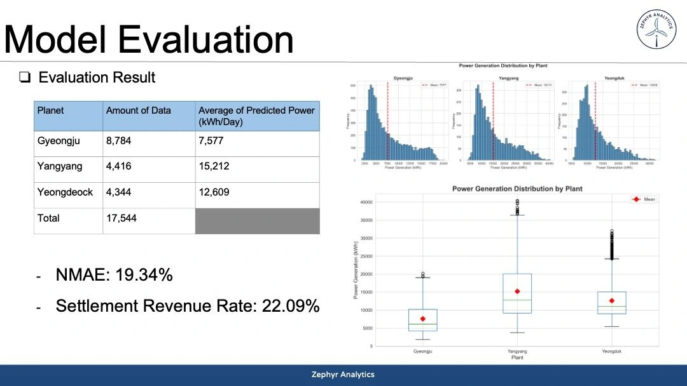

Energy Forecasting
Physics-Guided Wind Power Forecasting
BDA × EWP × 60Hertz · Zephyr Analytics · 2025 · 3rd Place · Excellence Award
Forecast hourly wind generation by correcting a physical power curve with learned residuals.

Problem and approach
A turbine power curve gives a physical estimate of wind generation. The model learns the error that remains between this estimate and observed production.
- Task: Predict hourly generation for Gyeongju, Yangyang, and Yeongdeok.
- Evaluation: Measure forecast error and settlement revenue under the competition rules.
My contribution
I designed the model architecture and optimized hyperparameters in Team Zephyr Analytics.
Forecasting model
1. Physical baseline
Estimate generation from weather conditions and the turbine power curve.
- Atmospheric features: Include air-density estimates, using the Arden–Buck equation in feature construction.
- Physical structure: Use the power curve as the initial forecast before learning a correction.
2. Residual learning
Train LightGBM to predict the difference between observed generation and the physical baseline.
- Training target: Subtract the baseline forecast from the observed generation.
- Hybrid prediction: Add the learned correction back to the physical estimate.
hybrid forecast = physical baseline + learned residual
3. Ensemble and hyperparameter optimization
Combine the hybrid model with Ridge Regression and Random Forest forecasts.
- Optimization: Use Optuna to tune model hyperparameters and ensemble weights.
- Evaluation: Inspect site-wise generation distributions alongside NMAE and settlement revenue.
Competition result
2025 BDA × EWP × 60Hertz Wind Power Forecasting Competition.
| Measure | Result |
|---|---|
| Team placement | 3rd / 270 |
| NMAE | 19.34% |
| Settlement revenue rate | 22.09% |
Metrics follow the competition’s evaluation rule.


Code & implementation references

Cover, architecture, and evaluation images are from the original Zephyr Analytics team presentation, supplied by Dong Hwi Kim.